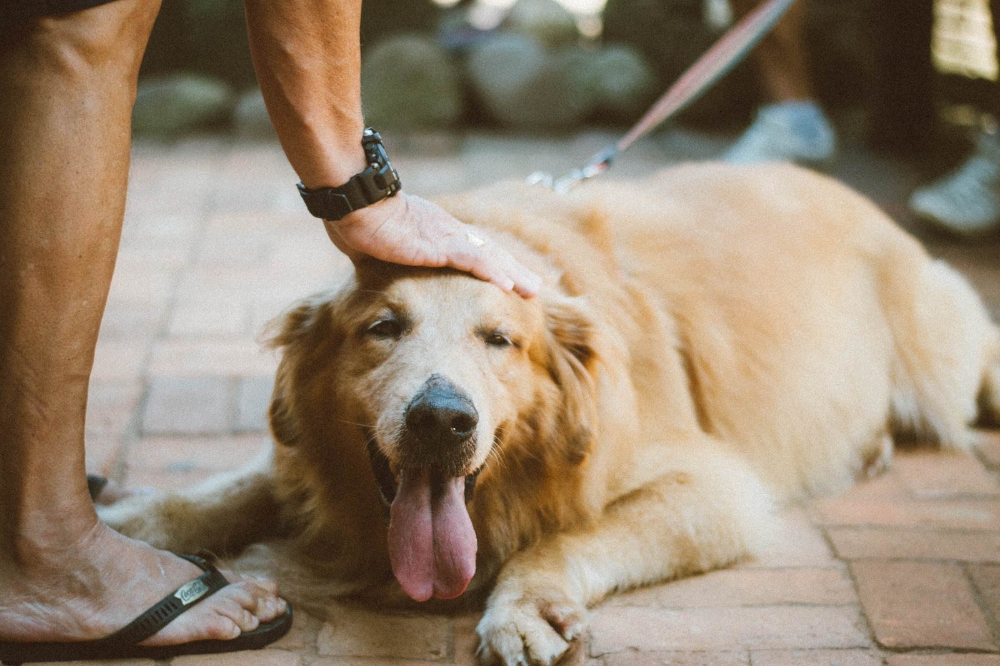
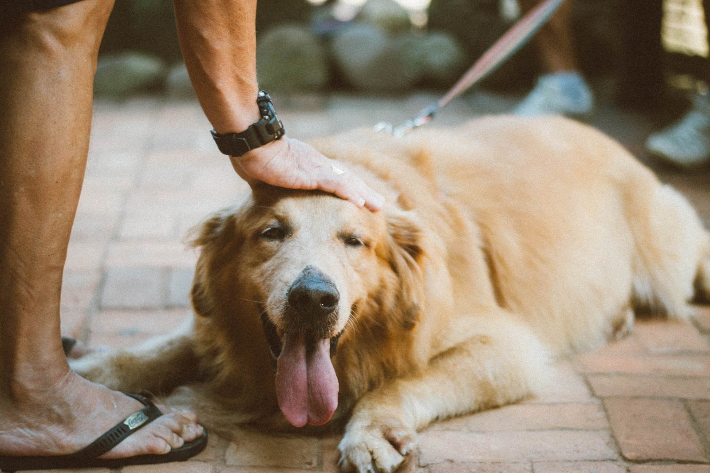

Formulario Login
SOBRE NOSOTROS
Encuentra a tu mascota nace en la ciudad de La Plata como una solución amigable para aquellos corazones preocupados de los dueños que han perdido a sus mascotas y de las mascotas que buscan a sus dueños. El principal objetivo es brindar herramientas que permitan un rápido reencuentro. A través de la misma, quienes hayan perdido o encontrado una mascota pueden publicar su foto, agregando descripciones y características.
Asimismo, contamos con la sección Adopciones y Tránsito, destinada a quienes están dispuestos a dar hogar permanente o transitorio a nujestros pequeños amigos. Remarcamos lo importante que es concientizar en este tema y la responsabilidad que ser un hogar implica. Es por ello que quienes decidan formar parte de dicho grupo deberán cumplir una serie de requisitos mínimos.
Por último podran encontrar en la sección "Teléfonos Utiles" datos de contacto importantes a la hora de cuidar a los animales.
LA ALEGRIA DE LOS REENCUENTROS
 
